AECODE Live
Clon de Luma multi-tenant para eventos AECODE: registro, tickets, WhatsApp notifs, certificados automáticos, pasarela Stripe Connect. 6 sprints.
Software, IA, hardware e investigación. He llevado 40+ proyectos desde idea hasta producción, paper o producto — combinando ingeniería estructural rigurosa con delivery iterativo moderno.

Vengo de la ingeniería estructural pero he pasado los últimos años construyendo software, agentes IA, hardware FPGA y modelos de visión que realmente se usan: en obra, en producción, en papers académicos.
Lidero el área de operaciones, automatización e IA en gen+, co-fundé GAIATECH (research spin-off), y produzco constantemente — desde plataformas web multi-tenant hasta sensores edge con panel solar y modelos de detección que corren a 38 FPS en Jetson.
Combinación que me define: rigor de método estructural + iteración rápida de software. Disfruto el ciclo completo: idea → prototipo → métricas → producto → mantenimiento.
Cada métrica corresponde a un proyecto real con dataset propio, hardware específico y validación reproducible. Los detalles técnicos están en los repositorios y demos.
Filtra por categoría. Cada tarjeta enlaza al stack técnico, métricas y status actual. La mayoría son open-source o tienen demo disponible.
Clon de Luma multi-tenant para eventos AECODE: registro, tickets, WhatsApp notifs, certificados automáticos, pasarela Stripe Connect. 6 sprints.

Web app para correos masivos con bloques visuales tipo Notion + módulo /certificados que estampa nombres sobre templates Canva con pdf-lib y envía masivo via Gmail.
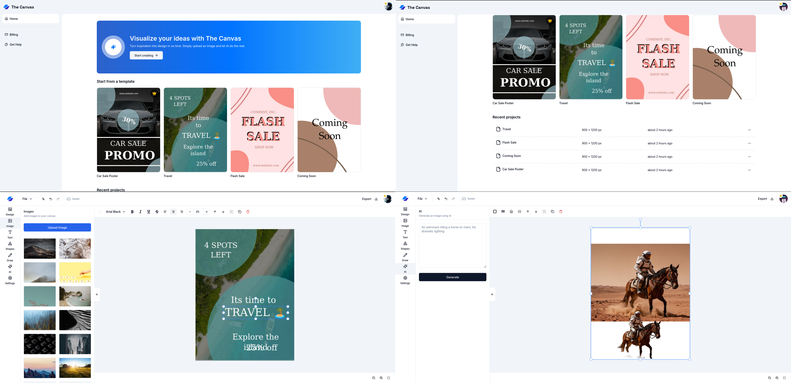
Editor visual de brochures con IA: canvas Fabric.js + briefs de cliente + Vision API + generación de bloques. Puerto 3500. v2 (Publish Studio) genera masivamente desde CSV/Sheets/Notion.

Panel Next.js 16 para coordinar 14 áreas de AI Summit jun 2026: briefs, avances, dependencias, riesgos y leaderboard en vivo.
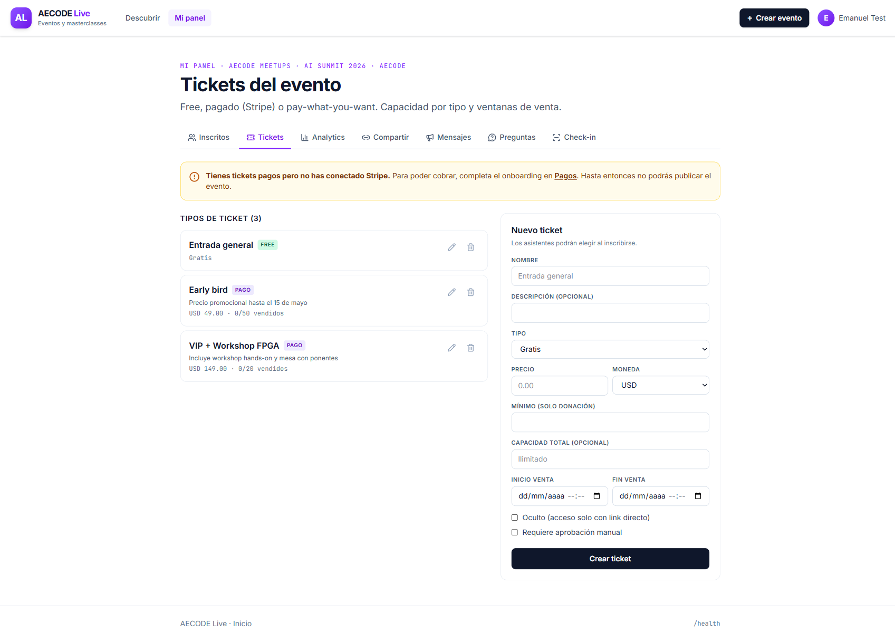
Multi-canal (WhatsApp/Web/Email) con kanban, SLA y triage IA para operaciones en vivo del AI Summit jun 2026.

Panel Next.js que enriquece la BD de empresas Notion (99+ filas) con Serper + Gemini en vivo. Dedupe seguro, puerto 3002.

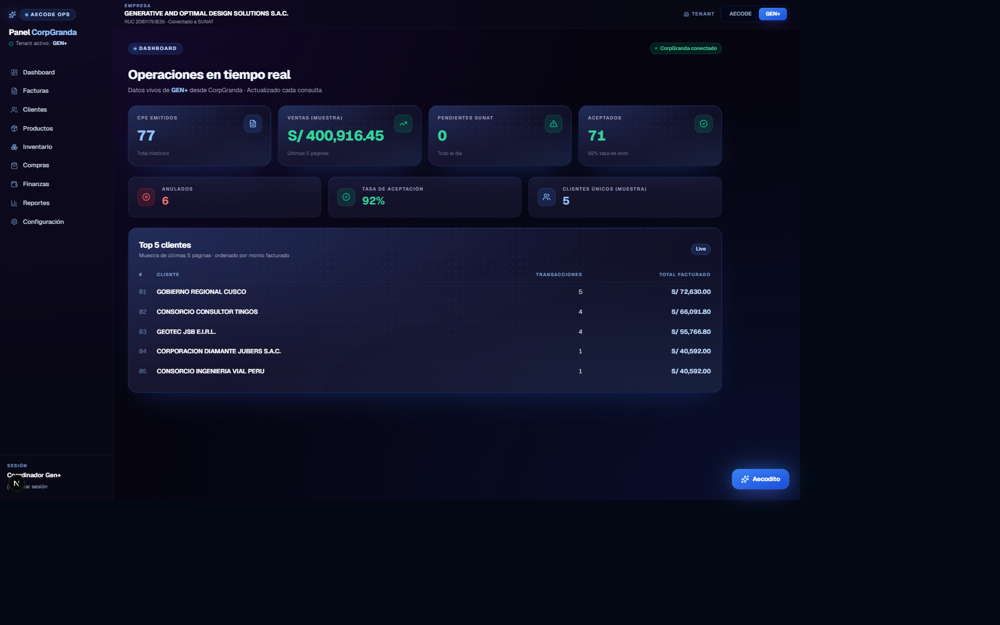
Panel multi-tenant para CorpGranda + 2 tenants más (Generative, CONEIC). Funcional local, deploy VPS bloqueado por firewall de IP.

Activepieces CE self-hosted en VPS para reemplazar n8n Cloud en Gen+. Multi-tenant, integraciones custom.

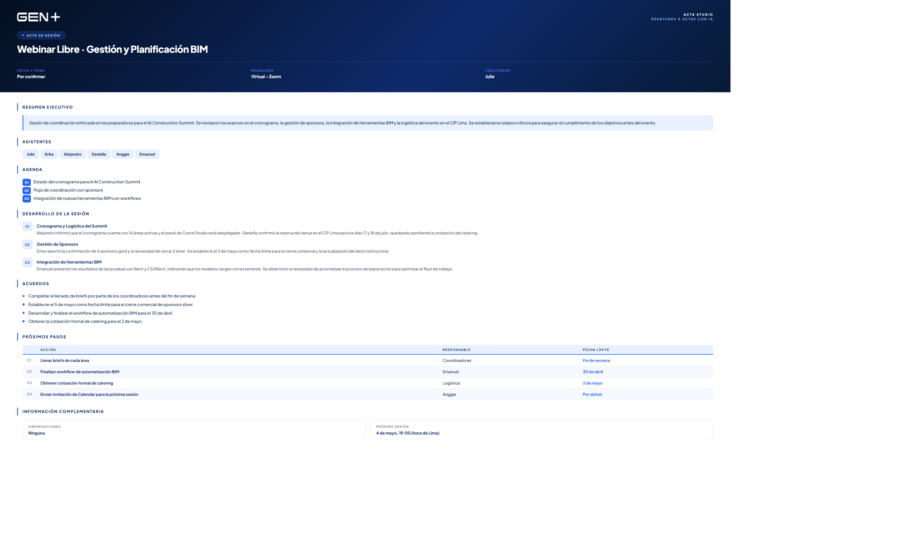
Panel multi-tenant (AECODE + Gen+) que transcribe reuniones Zoom y genera actas con IA + screenshots Playwright. VPS :3041.

Worker Python + n8n + Postgres + panel Next.js para monitoreo de oportunidades de licitación. Alertas vía Telegram.
100h, 16 sábados desde may 2026. 11 alumnos, 11 misiones personalizadas, hexágono AECODE de competencias. Demo YouTube de workflow real.
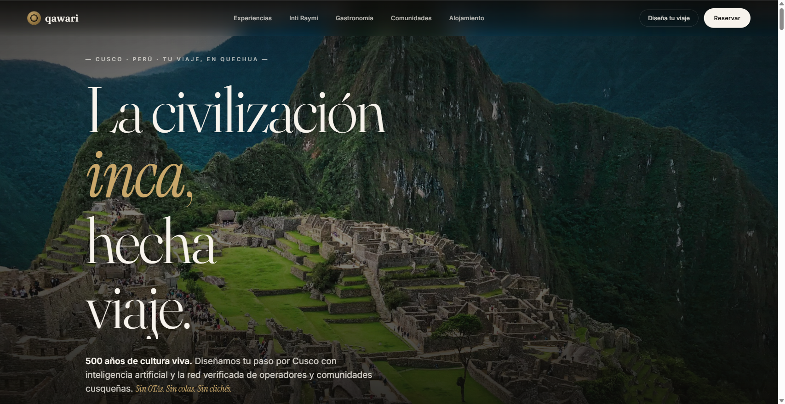
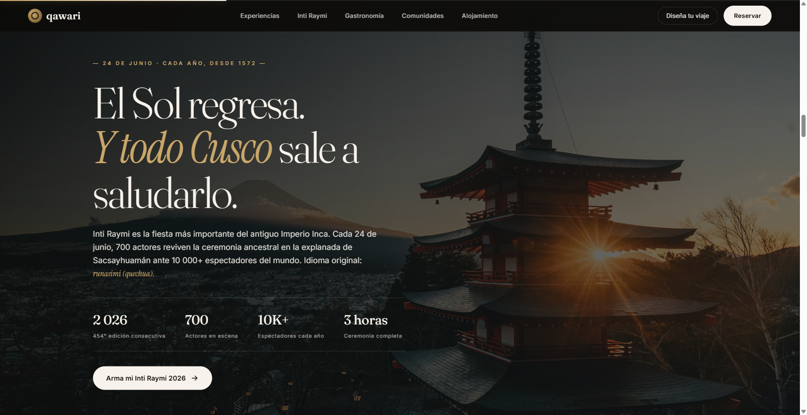
Plataforma cliente cinemática + tour Gemini Kore (voz) + MEGA dashboard. InnovaSuyu Cusco 2026 EIN Polo Turístico.
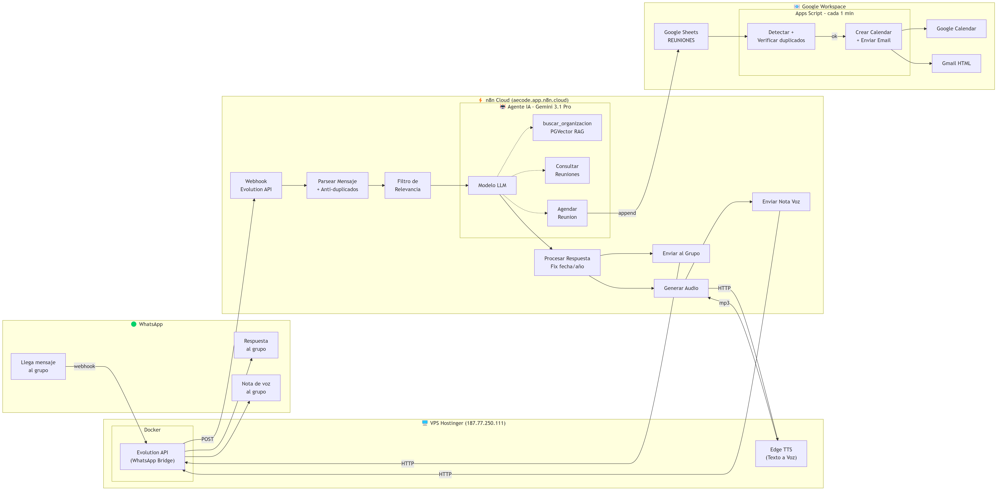
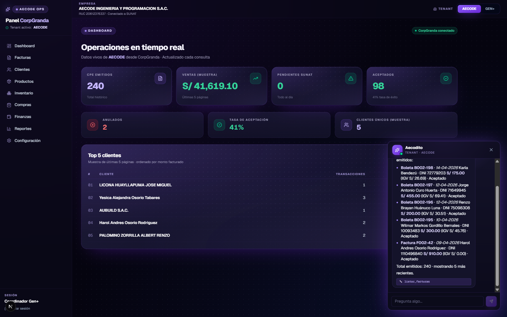
Agente WhatsApp multifuncional con 50 nodos n8n + 10 herramientas integradas (Sheets, Calendar, Gmail, Postgres pgvector). Memoria persistente, recordatorios, derivación inteligente a humanos. 23 funcionalidades.
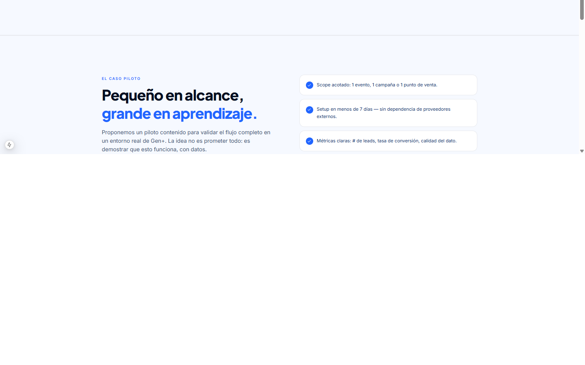
Captura de leads, programación de visitas, ficha técnica de propiedades con Drive/Sheets via WhatsApp. Desplegado mayo 2026.
Bot conversacional para grupos WhatsApp del equipo. Edge TTS (voz Kore femenina) para responder con audio.
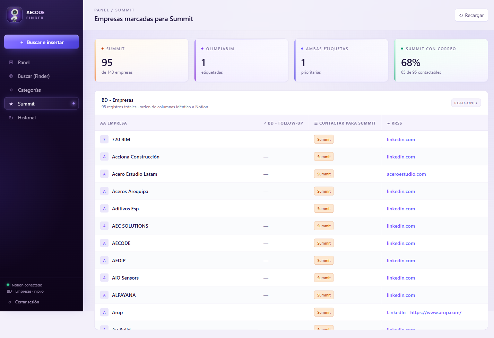
Panel web + workflow n8n + Serper + Gemini para encontrar y enriquecer perfiles de instructores. Desplegado en VPS.
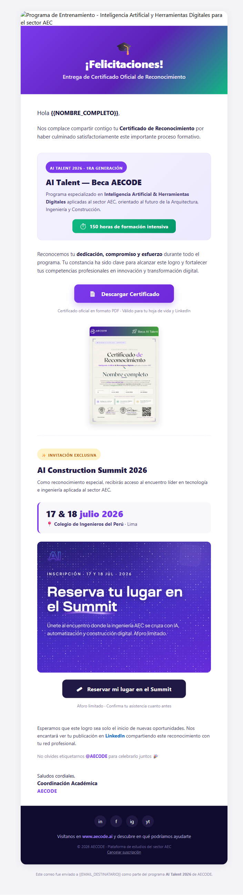
Visión de ecosistema: Email + Brochure + Slides + Social + Certs con core compartido. Cada módulo es independiente pero comparte auth + tokens.
Plataforma multi-rol admin/cliente para monitoreo de obra: detección EPP YOLOv8 (11 clases · 87.67% mAP · 38 FPS), dashboard métricas SVG, alertas sintéticas con filtros, reportes a casillas.
 Roboflow 1182
Roboflow 1182
Fine-tune YOLO11s para detección de cascos. Dataset Roboflow 1182 imágenes. Scripts PyCharm, GPU RTX 4060.
2 subsistemas (interno Jetson Orin Nano Super + PTZ 4K solar). CAPEX S/ 27,633 · 47% más barato que Lisual. Versión 3PAG.
DeepFace + ArcFace + YOLOv8 + 4 marcajes diarios + dashboard Vue.js + app móvil PWA. Reportes Excel con fotos embebidas, alertas tiempo real.

API FastAPI con DistilBERT que clasifica narrativas (naturaleza, parte del cuerpo, tipo de evento) + Toolbox Talks automáticos de 5 min.
Versión original del sistema EPP que dio origen a Vision Pro PDK. Detección en tiempo real de cascos, chalecos y arnés sobre RTSP IP cam. Predecesor del modelo YOLOv8 actual.
Sistema completo: FFT en FPGA Gowin GW1NR-9 (Explorer Edge-9K), ESP32 como bridge, modelo LSTM-Autoencoder F1 = 0.961, alertas WhatsApp < 2s. Aplicable a presas, taludes, estructuras críticas.
Explorer Edge-9K funcionando. 5 módulos para FFT. 253 KB de investigación técnica documentada. Pinout completo, gotchas resueltos.

Nodos IoT autónomos con Tang Nano 9K + ESP32-CAM + LoRa + panel solar. Edge AI sin internet. PachaGuard usa Tang Nano 1K + Verilog + UART.

Robot para AI Summit jun 2026: RPi 5 + AI HAT 26 TOPS + FPGA + ESP32-C6 + voz. BOM total ~$430 USD. Movimientos servo, voz Kore, integración con n8n.

Stack torch nv24.08 + cuSPARSELt + torchvision compiled. 38 FPS sostenidos con emarc_v3.1 EPP. 7 gotchas críticos documentados.


Suite de 9 plugins C# para Revit que automatizan tareas críticas: SAP2000/ETABS → Revit, vigas, zapatas, losas, columnas (L, cruz, rectangulares), acabados, constructor de habitaciones, bidireccional Revit↔SAP, AutoCAD → familias Revit.

Importa modelos estructurales analíticos de SAP2000/ETABS a Revit con mapeo de secciones, materiales y cargas. Elimina horas de modelado manual.

Familias paramétricas + plugin que genera columnas L, cruz y rectangulares a partir de parámetros de SAP. Resuelve la falta de columnas L nativas en Revit.


Modelado BIM completo (arquitectura + estructura + cobertura espacial). Aceros detallados, losas automáticas, planos a partir del modelo. Documentación lista para licitación.


Pipeline reproducible para llevar coberturas espaciales (cerchas, arcos, mallas) desde SAP2000 a Revit conservando topología, secciones y conexiones. 7 pasos documentados.


App de cálculo y diseño de tuberías de impulsión/gravedad: tramos, pérdidas, diagrama polar, dimensionamiento. Salida lista para integración con Revit/AutoCAD.


Aplicación nativa para calculadora HP Prime que resuelve hidráulica de tramos en campo. UI tabular, gráficos, integración paramétrica. Útil cuando no hay laptop.

Modelo Graph Neural Network para identificación modal estructural. R² = 0.998 vs 0.999 FFNN — con 65× menos parámetros. 4 tablas + 15 figuras PDF, listo para manuscrito Elsevier Structures.

Postulación PROCIENCIA 2026 (S/ 896,400 / 36 meses). 5 capas: edge + IA + satelital + chatbot + marketplace. Integra CultiGuard + PachaGuard + INIA Illpa-Puno.

Maqueta 1:10 + FPGA dual (FFT + GNN cuantizada) + 4 tipos de daño. 2 papers esperados. Cierre 19-jun, S/ 30k.

Co-dirección. Modelos híbridos Physics-Informed + GNN para detección no supervisada de anomalías en infraestructura civil.

Equipo multidisciplinario (8 estudiantes) en modelos PINN-GNN. Red de sensores MEMS + RPi. Pipeline ETL + features + dashboards Plotly.
Web inmobiliario con 3 fases: landing inmersiva + tour 360 R3F + pasarela Culqi. Entrega lun 04-may-2026. Marca Daniella/Anytime.
Oficina interactiva en Godot 4.4.1 con MCP configurado. AECODITO jugable. Sprites estilo pixel art con migración desde Unity.
Editor canvas con Fabric.js + assets generados por IA. Migración planeada a R3F para experiencia 3D más rica en v3.
Sistema de skills auto-activables: panel-stack, rag-architecture, auth-multitenant, vps-management, billing-stack, design-system, motion-animation, accessibility, ai-ux, dashboard-ux, ui-inspiration y más.
Investigación paralela de 61 dominios tecnológicos: 28 paneles + 17 UI/UX + 16 misc. ~400 herramientas evaluadas. Dossier maestro con stack decision tree.
Toolkit para equipo de diseño: guía HTML standalone con mascot video, efecto linterna, 18 plantillas .spec.ts para testing visual de paneles. ZIP 6.69 MB.
Toolkit con 18 plantillas Next.js + shadcn + Awwwards (9 app + 9 landing) para prototipado rápido de productos digitales. ZIP 664 KB.
Gestión VPS AECODE (10+ servicios Docker corriendo): n8n, finder, brochure, coord, ops, ClawdBot, Postgres pgvector, Activepieces, Acta Studio, Email Studio.
Herramientas que uso activamente. Open-source en su mayoría, con elecciones específicas por escenario.
De oficina técnica de obra civil a liderazgo del área de IA en gen+ y co-fundación de GAIATECH. Combinación inusual: rigor estructural + iteración software.
Open to work: producto, investigación, consultoría técnica, arquitectura de IA o hardware embebido. Conversemos sobre lo que necesitas — usualmente respondo en menos de 24 h.